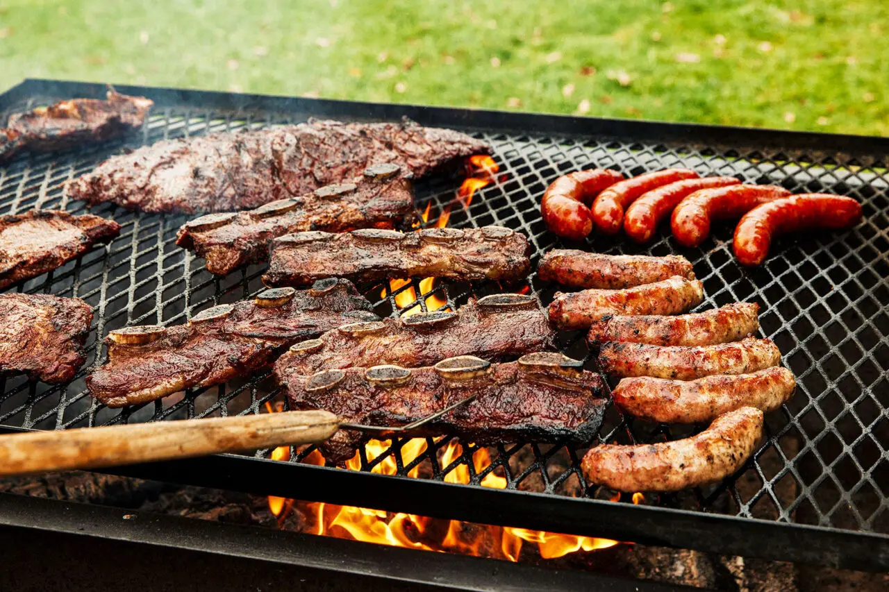

Argentinian Asado

Description
Asado is a common dish in Argentina, and with simple preparation, and low ingridients,
but is complex in the way of making it. Depending on the cook, it will taste different
from others.
The meat is required to be soft and greasy in order to give the meat its caracteristic
flavor. Knowing the type of cut is also an important ingridient in the order
to make this dish. Also important not all meat is well cooked at the grill.
In this recepie we will use a non propane grill, and brisket or "Tapa de Asado" but you can use
ribs, middle ribs, Sausages, etc...
Ingridients
- 500g (per dish) of brisket, the type of cut in rex meat
- 3kg Charcoal, this will depend in how much meat you have.
The ratio is almost 1kg of meat 500g of charcoal
- Wood
- Paper
- Salt
- 2 Lemon
Preparation
- Under a grill, put the charcoal and wood like a campfire.
- Star up the fire. While its making try to add charcoal so no fire escapes the middle,
and wood if its trying to turn off. There is infinite ways of doing this part,
the idea is to set up the fire and add charcoal enough to cook all the meat.
- Once the fire is done, wait until all charcoal ignites. Do not wait to long or wont be enough fire to cook
- Grab the meat and scrape knife cuts in diamond shape along the meat
- Put salt. If its a wider salt, put more salt than usual.
- Put Pepper if you like
- Cut Lemon and squeeze it over the meat.
- With you hand macerate all the meat.
- Grab something it wont burn and disperse the charcoal all under the grill
- Finally put the meat on top of the grill. This will take a while so wait until its done